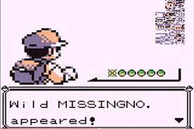

<poke-search (emmitSeach)="getSearch($event)"></poke-search>

<section class="listagem">
    <ng-template ngFor let-pokemon [ngForOf]="getAllPokemons">
        <a class="pokemon" *ngIf="pokemon.status" [routerLink]="['details', pokemon.status.id]">
            <section class="pokemon_status">
                <h2>
                    {{pokemon.name}}
                </h2>
                <ul>
                    <li *ngFor="let value of pokemon?.status?.types">
                        {{value.type.name}}
                    </li>
                </ul>
            </section>
            <section class="pokemon_image">
                
            </section>
        </a>
    </ng-template>
</section>

<section *ngIf="apiError">
    
    <p style="color: white;">Erro no site fale com um desenvolvedor</p>
</section>
